Module 02
Biomechanics & Movement Science
Written Guide + Quiz
Why It Matters
Biomechanics uses physics and engineering concepts to describe how forces act on and within the body during movement. As a climbing coach, understanding biomechanics allows you to identify inefficient movement, predict injury risk, and provide precise technical feedback. Every coaching cue you give — 'push through your feet', 'drop your hip', 'keep your elbow in' — is rooted in biomechanical principles.
Learning Objectives
By the end of this module, you will be able to:
- Identify the three planes of motion and axes of rotation and relate them to climbing movements
- Explain the concept of levers, torque, and force production in the context of the human body
- Describe and coach the seven fundamental movement patterns relevant to climbing
- Conduct a basic postural assessment and identify common movement dysfunctions in climbers
- Apply the principles of stability, mobility, and motor learning to coaching practice
Branches of Biomechanics
| Branch | Description |
|---|---|
| Statics | Studies bodies in constant motion with no acceleration — foundational to postural and structural analysis. |
| Dynamics | Involves acceleration; studies systems with changing velocity including running, jumping, and sport-specific movement. |
| Kinetics | The study of forces causing motion (F = ma, torque, GRF). |
| Kinematics | The description and appearance of motion, independent of forces — angles, velocity, displacement. |
Section 1: Planes of Motion & Axes of Rotation
Human movement occurs in three-dimensional space. To describe and analyse movement precisely, we use three anatomical planes and their corresponding axes of rotation. A solid grasp of these concepts allows coaches to describe movements clearly and identify when a climber is compensating outside their optimal movement plane.
1.1 The Three Planes
| Plane | Divides the Body Into | Example Movements |
|---|---|---|
| Sagittal Plane | Left and right halves | Pull-up, squat, heel raise, bicep curl — forward/backward movements |
| Frontal (Coronal) Plane | Front and back halves | Side step, lateral raise, hip abduction — side-to-side movements |
| Transverse (Horizontal) Plane | Upper and lower halves | Hip rotation, shoulder rotation, twisting drop-knee — rotational movements |
Climbing is a highly multi-planar activity. A single sequence on a route may involve a sagittal plane pull, a transverse plane hip rotation (drop-knee), and a frontal plane reach. Coaches who understand planes of motion can quickly identify when a move is failing because the athlete is attempting it in the wrong plane.
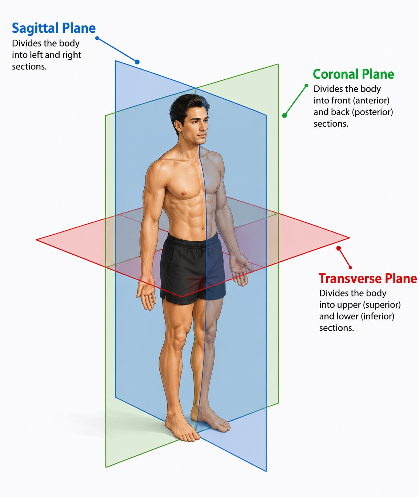
1.2 Axes of Rotation
Each plane has a corresponding axis around which rotational movements occur:
- Transverse Axis (Left-Right axis) — perpendicular to the sagittal plane; allows flexion and extension around it (e.g. elbow bend)
- Frontal (Anteroposterior) axis — perpendicular to the frontal (coronal) plane; allows abduction and adduction around it (e.g. leg raising to the side)
- Longitudinal (Vertical) axis — perpendicular to the transverse plane; allows rotation around it (e.g. trunk twist for a cross-through)
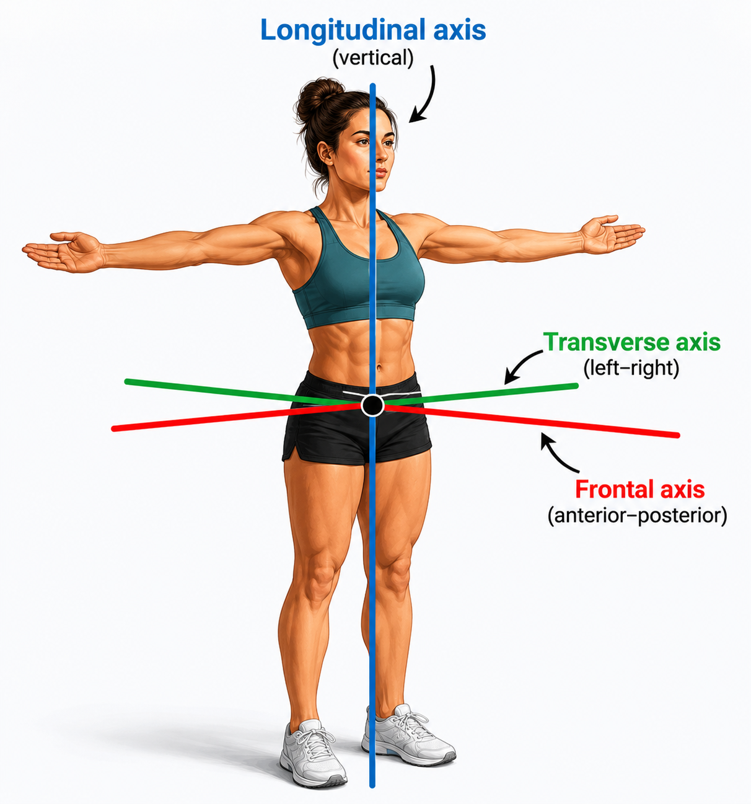
1.3 Anatomical Terminology for Movement
| Term | Definition | Climbing Example |
|---|---|---|
| Flexion | Decreasing the angle at a joint | Pulling into a lock-off (elbow flexion) |
| Extension | Increasing the angle at a joint | Straightening the arm on a rest position |
| Abduction | Moving a limb away from the midline | Raising the leg to the side for a high foothold |
| Adduction | Moving a limb toward the midline | Drawing the arm in during a lat-dominant move |
| Rotation (Internal/External) | Rotating a limb along its long axis | Shoulder external rotation on a pinch hold |
| Pronation / Supination | Forearm rotation (palm down / palm up) | Switching grip orientation on a sloper vs. undercling |
| Dorsiflexion / Plantarflexion | Ankle up / ankle down | Precise foot placement; heel hook (plantarflexed); toe hook (dorsiflexed) |
Section 2: Basic Biomechanical Concepts
2.1 Lever Systems
Biomechanics at the joint level is governed by lever mechanics. Every joint in the body acts as a lever system, with bones as levers, joints as fulcrums, and muscles providing the force. Understanding this helps coaches explain why technique matters — small changes in body position can dramatically alter the mechanical demand on muscles and joints.
A lever consists of a rigid bar (bone), a fulcrum (joint), an effort force (muscle), and a resistance force (weight or external load). There are three classes of lever, all of which are present in the human body:
First Class — Fulcrum between effort and resistance
Example: the atlanto-occipital joint (head nodding) — the neck muscles pull on the back of the skull to balance the face/skull weight in front.
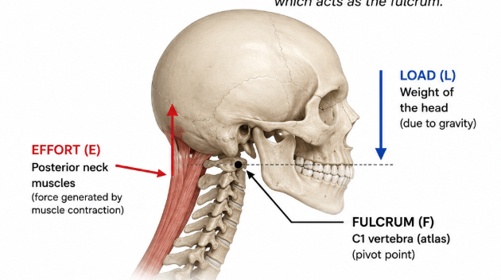
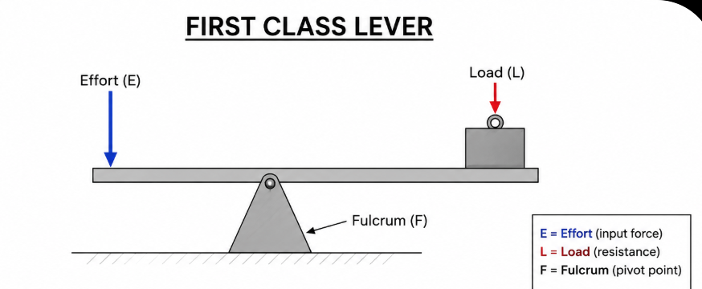
Second Class — Resistance between fulcrum and effort
Example: calf raise — the ball of the foot is the fulcrum, body weight the resistance, and the calf muscle the effort. Mechanically advantageous (force magnified).
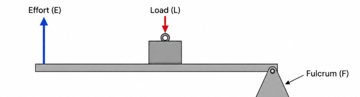
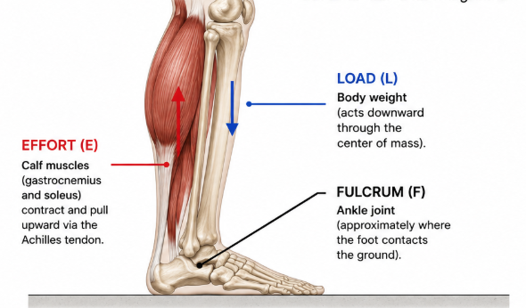
Third Class — Effort between fulcrum and resistance
MOST COMMON in the body. Example: bicep curl — elbow joint is fulcrum, biceps pulls just below the elbow, and the dumbbell is at the hand. Mechanically disadvantageous (speed favoured over force).
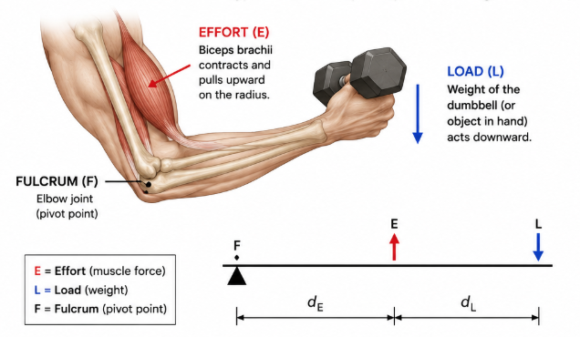
Coaching Insight
Because most muscles operate as third-class levers, the body must generate far more force than the load being lifted. This is why body position on the wall matters so much: moving the centre of mass closer to the wall reduces the effect of gravity and torque on the climber's body and decreases the muscular effort required to maintain position. Teaching climbers to 'stay close to the wall' is a biomechanical principle.
2.2 Torque
Torque (moment of force) is the rotational force applied around an axis. It is calculated as:
Torque = Force × Moment Arm (perpendicular distance from axis to line of force)
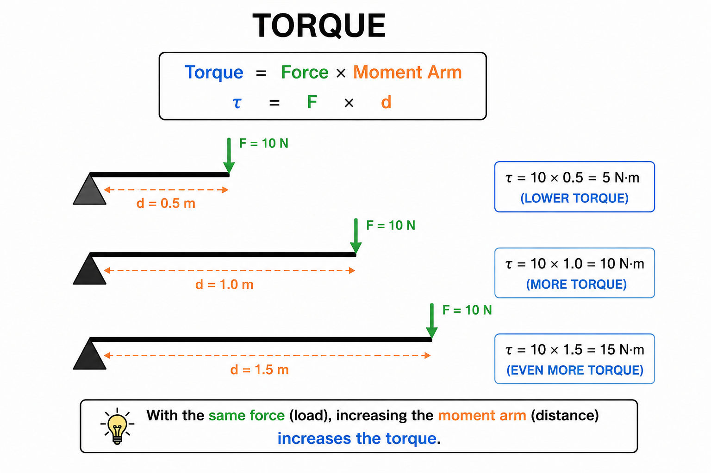
In practical coaching terms: the further a body part is from a joint axis, the greater the torque — and therefore the greater the muscular demand.
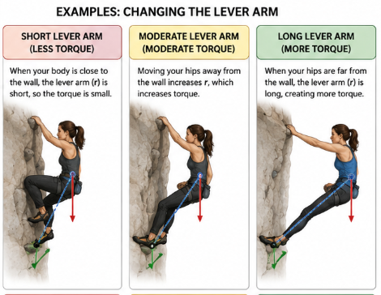
2.3 Ground Reaction Forces and the Wall
Newton's Third Law states that every action has an equal and opposite reaction. When a climber pushes down through a foothold, the wall pushes back with equal force. When a climber pulls on a crimp, the crimp pulls back on the fingers. Understanding force vectors helps coaches explain why certain body positions allow efficient transmission of force and why others lead to slipping feet or tweaked fingers:
- Perpendicular force application to a hold maximises friction and reduces the chance of slipping
- Oblique force on a finger hold increases shear load
- Balanced body positioning distributes load across multiple points of contact, reducing peak force at any single hold
- Placing as much rubber on a sloping volume increases friction and reduces slippage
2.4 Centre of Mass
The centre of mass (CoM) is the single point at which the entire mass of a body can be considered to be concentrated for the purposes of analysing motion. In the human body, it lies roughly at the level of the second sacral vertebra when standing in anatomical position, though it shifts continuously with every change in limb position or body configuration — and can even fall outside the body entirely (as in a deep hip hinge or pike position). Crucially, the CoM does not need to be supported directly; what matters for balance is that its vertical projection falls within the base of support.
In climbing, this principle is fundamental: a climber who keeps their hips close to the wall and their CoM positioned directly over their feet dramatically reduces the rotational forces pulling them away from the surface, improving both balance and efficiency. Understanding CoM also explains why body positioning — not just grip strength — determines whether a move is possible at all.

2.5 Load Deformation Relationship
The load vs deformation curve shows how a material responds as force is applied to it. In the elastic region, the material deforms but returns to its original shape once the load is removed. At the yield point, the material begins to deform permanently, entering the plastic region where changes in shape are no longer reversible. The ultimate failure point represents the maximum load the material can withstand before breaking or fracturing.
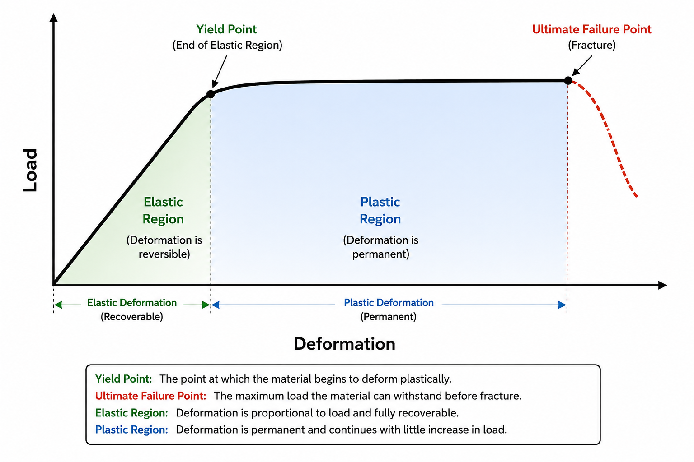
| Region | What Happens | Clinical Significance |
|---|---|---|
| Elastic Region | Tissue returns to original shape when load removed; no permanent damage | Normal training loads should remain in this region |
| Yield Point | Threshold beyond which permanent deformation begins; microfailure starts | Overuse injuries begin here — cumulative sub-threshold loading |
| Plastic Region | Permanent structural damage; tissue cannot return to original form | Partial tears; tissue remodelling required |
| Failure Point | Complete structural failure — fracture or complete rupture | Acute traumatic injury |
2.6 Acute vs Repetitive Loading
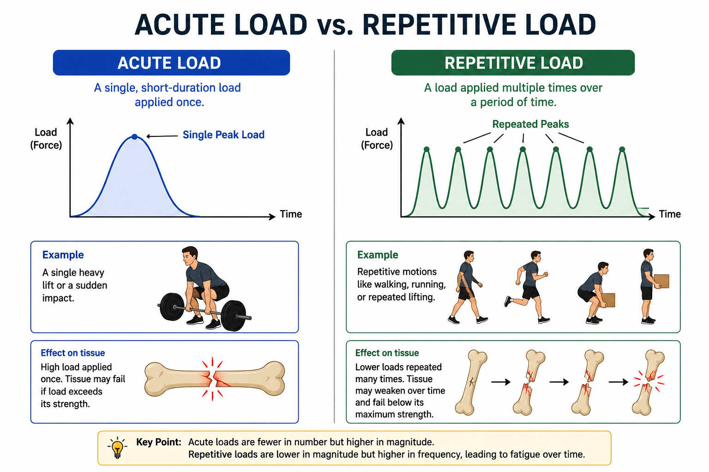
| Load Type | Definition | Example | Clinical Implication |
|---|---|---|---|
| Acute Load | A single force large enough to cause immediate structural damage | Fracture from a fall | Emergency management; structural assessment required |
| Repetitive Load | Repeated sub-threshold loads; each cycle causes micro-damage that accumulates | Repeated crimping sessions | Stress fractures, pulley overuse, tendinopathies — load management is key |
Section 3: Forces, Motion & Muscle Mechanics
Sections 1 and 2 covered planes of motion and lever systems — the geometry of how the body moves. This section adds the physics that explains why those movements behave the way they do: the laws governing force and motion, the language used to describe movement precisely, and the mechanical properties of muscle itself. Together these give coaches a fuller toolkit for explaining technique, not just describing it.
3.1 Newton's Laws of Motion in Climbing
Sir Isaac Newton's three laws of motion describe the relationship between force and movement. Every coaching cue about generating power, controlling a fall, or staying stuck to a hold is, at root, an application of one of these laws.
Newton's First Law — Law of Inertia
A body at rest stays at rest, and a body in motion stays in motion, unless acted on by an external force. A climber hanging static on a hold will remain static until a force — muscular effort, gravity overcoming grip, or a dynamic pull — changes that state. This is also why a controlled, deliberate start to a dynamic move is harder than it looks: the climber must first overcome their own inertia before any upward momentum can build.
Newton's Second Law — Force, Mass and Acceleration
Force equals mass multiplied by acceleration (F = m × a). For a given amount of force, a lighter climber will accelerate faster than a heavier one — part of why lighter climbers often find dynamic, momentum-based moves more forgiving, while heavier or more powerfully-built climbers may rely more on raw force production. This law also underpins why deadpoint timing matters: generating force efficiently, at the right moment, produces more useful acceleration than the same force applied carelessly.
Newton's Third Law — Action and Reaction
Already introduced in Section 2.3 as the basis of ground reaction forces: every force a climber applies to a hold is met by an equal and opposite force back into the body. This is why precise, controlled foot placement (rather than a stamped or sloppy placement) transmits force efficiently back up through the leg, and why a poorly directed push can send a climber's body the wrong way off a foothold.
Coaching Insight
Newton's laws are rarely taught explicitly to climbers, but coaches use them constantly without naming them. Translating a cue like 'commit to the move' into 'you need to overcome inertia before you can accelerate' can help analytically-minded athletes understand why hesitation costs them on dynamic sequences.
3.2 Describing Movement: Basic Kinematics
Where Module 02's opening page introduced kinematics as 'the description and appearance of motion, independent of forces,' it's worth giving coaches the basic vocabulary to describe movement precisely on the wall.
| Term | Definition | Climbing Application |
|---|---|---|
| Distance | The total length of the path travelled, regardless of direction | A climber who readjusts their feet twice before committing has covered more distance than displacement — wasted movement costs energy |
| Displacement | The straight-line distance between start and end points | Route efficiency is partly about minimising the gap between distance travelled and displacement achieved — economy of movement |
| Speed / Velocity | Distance (or displacement) covered per unit of time. Velocity includes direction | A controlled, static approach to a hold has low velocity; a dynamic move to the same hold has high velocity |
| Acceleration | The rate of change of velocity over time | Explosive moves (dynos, campus moves) require rapid acceleration; controlled lock-offs require the athlete to decelerate smoothly into control |
These terms matter most when coaching the difference between static and dynamic technique. A static move prioritises control — low velocity, minimal acceleration, continuous contact with holds. A dynamic move deliberately generates high acceleration over a short distance to cover a displacement that static technique cannot reach. Recognising which a climber needs, and coaching the appropriate one, is itself a kinematic judgement.
3.3 Mechanical Advantage: Quantifying 'Stay Close to the Wall'
Section 2.1 introduced lever classes and Section 2.2 introduced torque. Mechanical advantage builds directly on both, and gives coaches a way to reason quantitatively — not just descriptively — about why small positional changes matter so much on the wall.
Mechanical advantage (MA) is the ratio between the muscle's moment arm and the resistance's moment arm:
MA = Moment arm of muscle force ÷ Moment arm of resistance force
An MA greater than 1 means the muscle has a mechanical advantage — it can move a load larger than the force it generates. An MA less than 1 means the muscle is at a mechanical disadvantage and must generate more force than the load itself. Almost every major climbing movement operates at MA < 1, because most human joints are third-class lever systems — the muscle's moment arm is short, and the resistance's moment arm (the distance out to the hand or foot) is comparatively long.
Coaching Insight
This is the mechanism behind 'stay close to the wall.' Moving the hips toward the wall shortens the moment arm of the resistance force (bodyweight) acting through the arms and shoulders. A shorter resistance moment arm means a more favourable (less disadvantageous) MA ratio — the same muscles now need to generate less force to hold the same position. This is precisely why two climbers of equal strength can feel completely different levels of effort on the same hold, based purely on hip position.
The practical coaching takeaway: technique fixes that look like 'body positioning' cues are very often mechanical advantage problems in disguise. A climber struggling on a steep move with hips dropped away from the wall isn't necessarily lacking strength — they may simply be operating at a worse MA ratio than the move requires.
3.4 Muscle Mechanics for Coaches
Beyond lever mechanics, the muscle itself has mechanical properties that change how much force it can produce depending on its length, its speed of contraction, and the type of action it is performing. Understanding these helps explain movement quality issues that lever mechanics alone cannot.
The Three Types of Muscle Action
| Action | What Happens | Climbing Example |
|---|---|---|
| Concentric | The muscle shortens because contraction force exceeds resistance force | Pulling into a lock-off; the biceps and lats shorten to draw the body up |
| Eccentric | The muscle lengthens under load because resistance force exceeds contraction force | Lowering with control on a downclimb, or controlling a drop onto a heel hook — higher injury risk, as tendons are loaded while stretching |
| Isometric | Muscle length stays constant; contraction force equals resistance force | Holding a static lock-off or a mid-route rest position |
Force-Length Relationship
A muscle produces its greatest force at a mid-range length, where the maximum number of cross-bridges can form between its contractile filaments. At very short or very long muscle lengths, force production drops off. This explains a common climbing experience: a lock-off becomes noticeably weaker in the last few degrees of full elbow flexion or extension, even though the climber is working just as hard — the muscle is simply operating outside its strongest length range.
Force-Velocity Relationship
Force and the speed of muscle shortening are inversely related: the faster a muscle contracts, the less force it can produce, and vice versa. A slow, controlled pull-up generates more force per unit of muscle activation than a fast, jerky one. This is part of why dynamic moves rely on technique, timing and momentum rather than pure strength — at high contraction speeds, the muscle physically cannot produce maximal force, so the climber must generate power through coordinated whole-body movement instead.
Coaching Insight
Together, these two relationships explain why slow strength work (e.g. controlled hangboard repeaters) and fast power work (e.g. campus board, dynos) train genuinely different qualities, and why a climber who is strong in one may still be weak in the other. Programming for climbing should include both ends of the force-velocity spectrum, not just maximal strength.
These concepts — Newton's laws, kinematic vocabulary, mechanical advantage, and muscle mechanics — don't replace anything in Sections 1 and 2; they sit underneath them, giving coaches the physics reasoning that supports the lever, torque and centre of mass principles already covered. A coach who understands why 'stay close to the wall' works mechanically is better equipped to adapt that cue when a climber's body type, injury history, or the specific move demands a different solution.
Section 4: Fundamental Movement Patterns
Coaching movement begins with understanding fundamental patterns. In the context of strength and conditioning, movement can be categorised into several key patterns that form the basis of all human physical activity. In climbing, these patterns also manifest on the wall, and their quality has a direct impact on performance and injury risk.
Programming Note
A balanced training programme for climbing should include all seven patterns, not just the pulling movements that dominate on the wall. Many common climbing injuries — shoulder impingement, elbow tendinopathy, postural dysfunction — stem directly from an imbalanced training diet that prioritises vertical pulling at the expense of pushing and hip-hinging.
4.1 The Seven Fundamental Patterns
| Pattern | Description & Climbing Relevance |
|---|---|
| Push (Horizontal) | Moving load away from body horizontally — press-up, dumbbell press. Antagonist to pulling; essential for shoulder health in climbers. Mantling on a ledge is a climbing-specific push. |
| Push (Vertical) | Overhead pressing — shoulder press. Relevant for shoulder stability during high-reach moves. |
| Pull (Horizontal) | Rowing movements drawing load toward the torso — bent-over row. Builds scapular retractors and mid-back stability; addresses posture. Relevant to climbing for pulling into a wall and holding a position hanging from a roof. |
| Pull (Vertical) | Pulling overhead load down — pull-up, lat pull-down. The primary movement pattern in climbing; directly trains the lat, biceps, and posterior shoulder. |
| Hinge | Hip-dominant movement with neutral spine — deadlift, Romanian deadlift. Builds posterior chain; directly trains the hip extension used in high steps, standing on footholds, heel hooks and hard toe downs. |
| Squat | Knee-dominant lower body movement — squat, goblet squat. Strengthens quads and glutes; improves leg drive for standing up on high holds and jumping for dyno's. |
| Carry | Loaded walking / unilateral stability — farmer's carry, suitcase carry. Builds core stability and shoulder girdle resilience. |
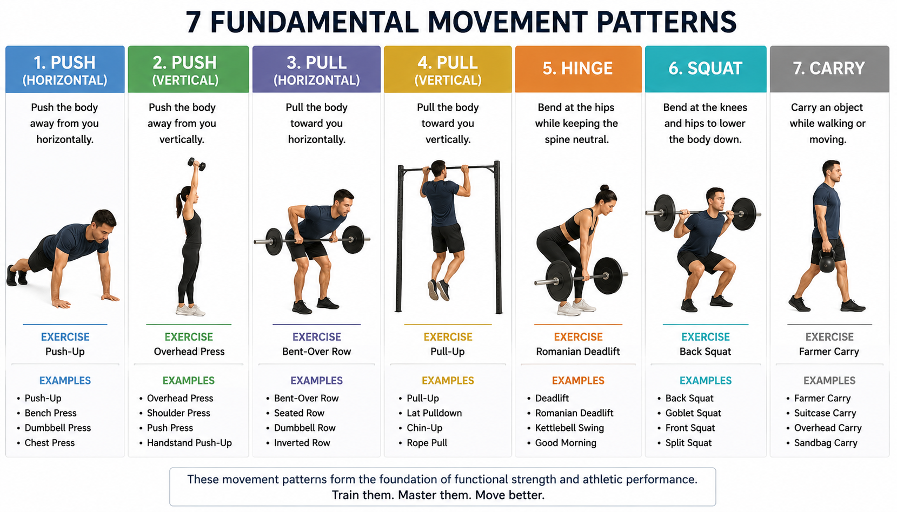
Section 5: Postural Assessment & Movement Dysfunction
Before designing a training programme, coaches should assess their athlete's posture and basic movement quality. Postural assessment provides a baseline and highlights areas of tightness, weakness, or compensatory movement that may increase injury risk or limit performance.
5.1 Static Postural Assessment
A static postural assessment is conducted from the front, side, and rear with the client standing naturally. Common findings in climbers include:
- Forward head posture — head protrudes in front of the shoulder line; associated with upper trapezius tightness and cervical strain
- Rounded shoulders (scapular protraction) — shoulders roll forward; associated with tight pectorals and weak rhomboids/lower trapezius
- Thoracic kyphosis — excessive rounding of the upper back; increased by repeated overhang climbing positions
- Anterior pelvic tilt — the front of the pelvis drops and the lower back arches; associated with tight hip flexors and weak glutes/core
- Knee valgus (knock knees) — knees cave inward; associated with weak hip abductors and poor proprioception
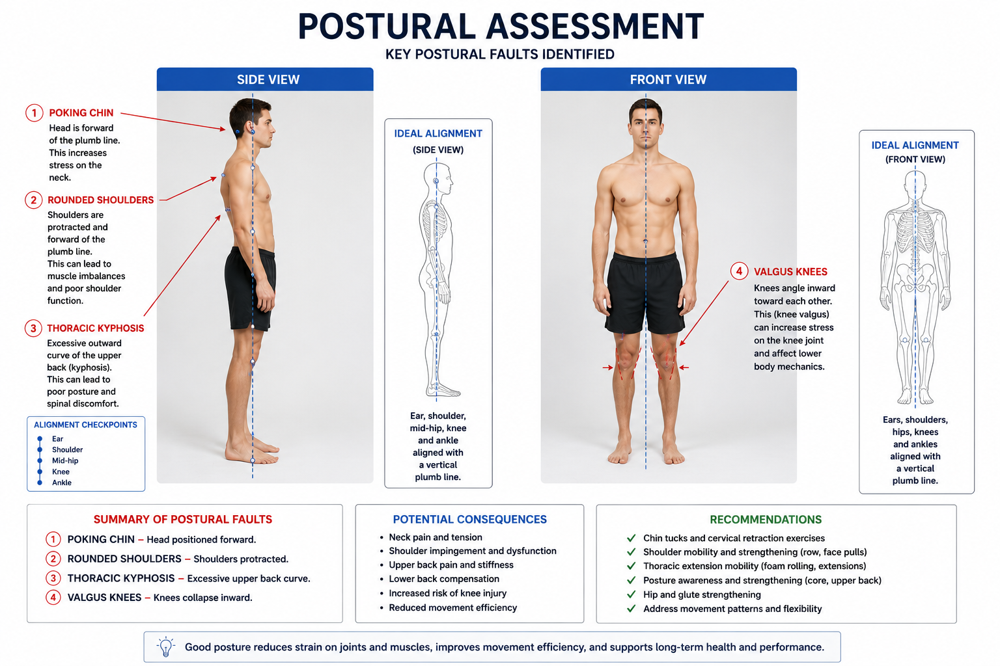
Important Note
Static posture is not diagnostic — it identifies areas to investigate further with dynamic assessment. Many athletes with poor static posture move well under load, and vice versa. Use postural findings as hypotheses, not conclusions.
5.2 Dynamic Movement Assessment — Overhead Squat
The overhead squat is a practical screening tool that simultaneously loads the entire kinetic chain. Instruct the client to hold a dowel rod or band overhead, shoulder-width grip, and perform a squat to parallel. Although the overhead squat doesn't seem to replicate climbing movements, its use as an assessment tool for overall mobility is invaluable. Observe from the front and side:
| Observation | Possible Dysfunction |
|---|---|
| Arms fall forward | Tight lats or thoracic spine; limited shoulder flexion mobility |
| Excessive forward lean of torso | Tight hip flexors or ankle dorsiflexion restriction |
| Heels rise | Tight calves / limited ankle mobility |
| Knees cave inward (valgus) | Weak hip abductors (glute medius); tight adductors |
| Low back rounds or arches excessively | Weak core or limited hip mobility |
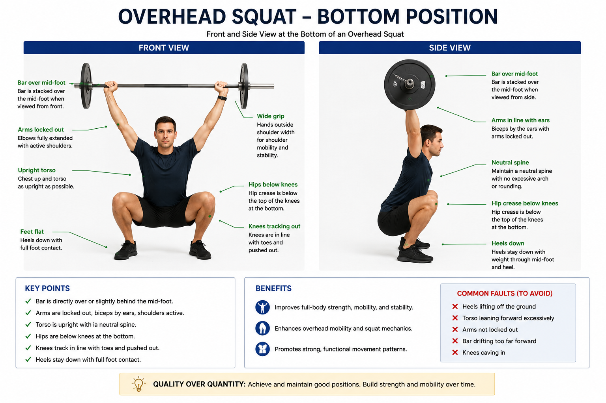
5.3 Mobility vs. Stability — The Joint-by-Joint Approach
Gray Cook's joint-by-joint model provides a useful framework for understanding dysfunction. It proposes that joints alternate in their primary need — some primarily require mobility, others primarily require stability. When a mobility-dominant joint is restricted, an adjacent stability-dominant joint compensates by moving excessively, increasing injury risk there.
| Joint | Primary Need |
|---|---|
| Ankle | Mobility (dorsiflexion) |
| Knee | Stability |
| Hip | Mobility (multi-directional) |
| Lumbar spine (low back) | Stability |
| Thoracic spine (mid back) | Mobility (extension and rotation) |
| Scapulothoracic (shoulder blade) | Stability |
| Glenohumeral (shoulder) | Mobility |
| Elbow | Stability |
| Wrist / Hand | Mobility |
For climbing coaches: tight hips (lost mobility) will cause the lumbar spine to compensate during high steps and rock-overs, placing excessive stress on the lower back. Similarly, restricted thoracic mobility causes the shoulder girdle to compensate, increasing impingement risk on reaching moves.
Section 6: Stability, Mobility & Motor Learning
6.1 The Role of Stability in Climbing
Stability is the ability to maintain or control body position, particularly under load. In climbing, stability is required at:
- The core — to transfer and control forces between the upper and lower body, especially on steep terrain
- The shoulder girdle — to protect the rotator cuff and allow efficient force transmission through the arm
- The lower limb — to maintain precise foot placement and prevent unnecessary body sway
Stability is not about rigidity — it is dynamic. A climber with excellent core stability can move their limbs freely and powerfully without their torso rotating or sagging. This is sometimes called proximal stability enabling distal mobility.
6.2 Mobility Requirements in Climbing
Adequate mobility at key joints enables efficient movement on the wall and reduces compensatory patterns. High-priority mobility areas for climbers include:
- Hip flexion and external rotation — for high steps, frog positions, and drop-knee technique
- Shoulder flexion and external rotation — for high reaches, underclings, and overhead lock-off positions
- Thoracic extension and rotation — for twisting, cross-through moves, and maintaining upright posture
- Ankle dorsiflexion — for precise smearing and slab climbing
6.3 Applying Motor Learning in Coaching Practice
As introduced in Module 1, motor learning moves through cognitive, associative, and autonomous stages. Coaches can accelerate progress and build more durable skill by applying evidence-based principles of practice:
| Principle | Practical Application |
|---|---|
| Variability of Practice | Practice similar movements on different holds, angles, and problems rather than repeating the same sequence exactly. Builds adaptable motor programmes. |
| Contextual Interference | Mix different skills within a session (e.g. footwork drills, body positioning, dynamic moves) rather than blocking by skill type. Initially reduces performance but enhances long-term retention. |
| Feedback Timing | Delay feedback slightly after a movement to encourage the athlete to self-evaluate first. Immediate, constant feedback creates dependency and reduces self-monitoring. |
| Whole vs. Part Practice | Teach the full movement where possible (whole practice). Only break movements into parts (part practice) if the sequence is very long or complex. |
| Mental Rehearsal | Encourage athletes to visualise routes before attempting them. Mental rehearsal activates similar neural pathways to physical practice and improves performance under pressure. |
6.4 Effects of Fatigue
| Effect | Mechanism | Coaching Implication |
|---|---|---|
| Reduced force output | ATP production rate falls below demand | Reduce load or volume — don't train to complete failure in technical sessions |
| Loss of fine motor control | Impaired neuromuscular coordination | Fatigued climbers have significantly increased injury risk — stop technical work when technique breaks down |
| Increased injury risk | Impaired proprioception and coordination | Monitor for technique degradation as a fatigue signal; prioritise session structure accordingly |
Rehabilitation Implication
Training to fatigue must be progressive. Fatigued athletes have impaired neuromuscular control — a primary injury risk factor. Early mobilisation after injury dramatically decreases atrophy and maintains mechanical properties of the musculotendinous unit.
Module Summary
A quick reference before moving on
Key Terms & Definitions
| Sagittal Plane | The plane that divides the body into left and right halves; movements in this plane include flexion and extension. |
| Frontal Plane | The plane dividing the body into front and back; movements include abduction, adduction, and lateral flexion. |
| Transverse Plane | The plane dividing the body into upper and lower halves; movements include rotation (twisting). |
| Torque | A rotational force; the product of force and the perpendicular distance (moment arm) from the axis of rotation. |
| Moment Arm | The perpendicular distance between the line of force and the axis of rotation; a longer moment arm increases torque. |
| Lever System | A rigid structure (bone) rotating around a fulcrum (joint) under the influence of an effort force (muscle) and resistance (load). |
| Kinetic Chain | The interconnected system of joints and muscles that work together to produce movement; dysfunction at one link affects the whole chain. |
| Anterior Pelvic Tilt | A postural deviation where the front of the pelvis drops and the lower back arches excessively; associated with tight hip flexors and weak core. |
| Thoracic Kyphosis | Excessive rounding of the upper/mid back; commonly seen in climbers due to the forward-flexed posture of overhang climbing. |
| Proximal Stability | Stability at the core and shoulder girdle that enables efficient and powerful distal (arm/leg) movement. |
| Joint-by-Joint Model | A framework suggesting that joints alternate between needing primarily mobility or stability; restriction at a mobile joint forces compensation at an adjacent stable joint. |
| Overhead Squat Assessment | A dynamic movement screen used to identify mobility and stability limitations throughout the kinetic chain. |
| Variability of Practice | A motor learning strategy involving practice of skill variations rather than exact repetition; improves long-term skill transfer. |
| Scapular Protraction | Forward movement (rounding) of the shoulder blades; a common postural finding in climbers due to dominant pulling and gripping. |
Key Takeaways
- Movement occurs in three planes — sagittal (forward/back), frontal (side-to-side), and transverse (rotational). Climbing is multi-planar and coaches must understand all three.
- Lever mechanics and torque explain why body position dramatically alters the muscular demand of holds and moves. Staying close to the wall reduces moment arms and conserves energy.
- The seven fundamental movement patterns (push, pull, hinge, squat, carry — horizontal and vertical) should all feature in a climber's training programme to prevent imbalance.
- Postural assessment identifies common dysfunctions in climbers — rounded shoulders, kyphosis, anterior pelvic tilt — that can be addressed through targeted mobility and strength work.
- The joint-by-joint model helps coaches understand why restricting mobility at one joint causes compensatory stress elsewhere — a key insight for injury prevention.
- Motor learning principles — variability, contextual interference, delayed feedback — should inform how coaches structure practice for skill development.
Looking Ahead
In Module 3 — Client Assessment & Health Screening — we will apply both anatomical and biomechanical knowledge practically, learning how to assess climbers systematically before designing their programmes.